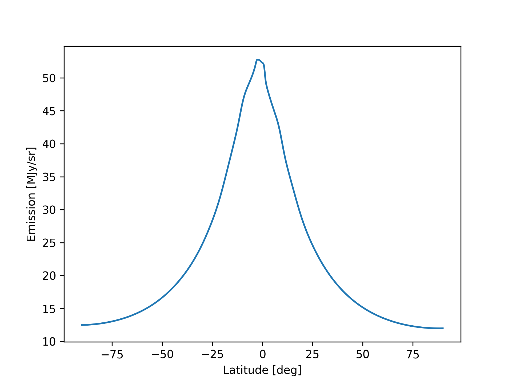

Usage
Timestreams
Below we illustrate how ZodiPy can be used to create timestreams of the zodiacal emission. Note that since ZodiPy assumes a constant observer position over the input pointing sequence, the output will not be real timestreams, but for small enough time intervals the error is negligible.
Emission along a meridian
In the following example we simulate what an observer on Earth is expected to see on 14 June, 2022 when looking along a meridian (line of constant longitude) at 30 microns, given the DIRBE interplanetary dust model.
import astropy.units as u
import matplotlib.pyplot as plt
import numpy as np
from astropy.time import Time
from zodipy import Zodipy
model = Zodipy("dirbe")
latitudes = np.linspace(-90, 90, 10000) * u.deg
longitudes = np.zeros_like(latitudes)
emission = model.get_emission_ang(
30 * u.micron,
theta=longitudes,
phi=latitudes,
lonlat=True,
obs_time=Time("2022-06-14"),
obs="earth",
)
plt.plot(latitudes, emission)
plt.xlabel("Latitude [deg]")
plt.ylabel("Emission [MJy/sr]")
plt.savefig("../img/timestream.png", dpi=300)
plt.show()

Note
ZodiPy assumes a constant observer position over an input pointing sequence. For an observer on Earth, the true zodiacal emission signal will move along the ecliptic on the sky by roughly one degree each day. To account for this effect, the full pointing sequence of an experiment should be chunked into small subsequences with timescales corresponding to at maximum a day.
HEALPix maps
Below we illustrate how ZodiPy can be used to create simulated binned HEALPix maps of the zodiacal emission.
Instantaneous map in ecliptic coordinates
In the following example we make an instantaneous map of of the zodiacal emission at 857 GHz as seen by an observer on earth on 14 June, 2022 given the Planck 2018 interplanetary dust model.
import astropy.units as u
import healpy as hp
import matplotlib.pyplot as plt
import numpy as np
from astropy.time import Time
from zodipy import Zodipy
model = Zodipy("planck18")
nside = 256
binned_emission = model.get_binned_emission_pix(
857 * u.GHz,
pixels=np.arange(hp.nside2npix(nside)),
nside=nside,
obs_time=Time("2022-06-14"),
obs="earth",
)
hp.mollview(
binned_emission,
title="Binned zodiacal emission at 857 GHz",
unit="MJy/sr",
min=0,
max=1,
cmap="afmhot",
)
plt.savefig("../img/binned.png", dpi=300)
plt.show()
 Note that the color bar is logarithmic.
Note that the color bar is logarithmic.
Bandpass integrated emission
Instruments do not typically observe at delta frequencies. Usually, we are more interested in finding out
what the emission looks like over some instrument bandpass. ZodiPy will accept a sequence of frequencies to the freq
argument in addition to the corresponding bandpass weights to the weights argument and perform bandpass integration.
Note that the bandpass weights must be in spectral radiance units (Jy/sr), even though the weights them self are unitless. A top hat bandpass is assumed if a sequence of frequencies are used without providing weights.
import astropy.units as u
import healpy as hp
import matplotlib.pyplot as plt
import numpy as np
from astropy.time import Time
from zodipy import Zodipy
nside = 128
center_freq = 800 * u.GHz
freqs = np.linspace(750, 850, 11) * u.GHz
weights = np.array([2, 3, 5, 9, 11, 11.5, 11, 9, 5, 3, 2])
plt.plot(freqs, weights)
plt.xlabel("Frequency [GHz]")
plt.ylabel("Weights")
plt.savefig("../img/bandpass.png", dpi=300)
model = Zodipy(model="planck18")
emission_central_freq = model.get_binned_emission_pix(
freq=center_freq,
pixels=np.arange(hp.nside2npix(nside)),
nside=nside,
obs_time=Time("2022-03-10"),
obs="SEMB-L2",
)
emission_bandpass_integrated = model.get_binned_emission_pix(
freq=freqs,
weights=weights,
pixels=np.arange(hp.nside2npix(nside)),
nside=nside,
obs_time=Time("2022-03-10"),
obs="SEMB-L2",
)
hp.mollview(
emission_central_freq,
title=f"Center frequency",
unit="MJy/sr",
cmap="afmhot",
norm="log",
)
plt.savefig("../img/center_freq.png", dpi=300)
hp.mollview(
emission_bandpass_integrated,
title="Bandpass integrated",
unit="MJy/sr",
cmap="afmhot",
norm="log",
)
plt.savefig("../img/bandpass_integrated.png", dpi=300)
plt.show()
Solar cutoff angle
Few experiments look directly in towards the Sun. We can initialize Zodipy with the solar_cut
argument to mask all input pointing that looks in towards the sun with an angular distance smaller
than the solar_cut value.
import astropy.units as u
import healpy as hp
import matplotlib.pyplot as plt
import numpy as np
from astropy.time import Time
from zodipy import Zodipy
model = Zodipy("dirbe", solar_cut=60 * u.deg)
nside = 256
binned_emission = model.get_binned_emission_pix(
25 * u.micron,
pixels=np.arange(hp.nside2npix(nside)),
nside=nside,
obs_time=Time("2020-01-01"),
obs="earth",
)
hp.mollview(
binned_emission,
title="Solar cutoff at 60 degrees",
unit="MJy/sr",
max=80,
coord="E",
cmap="afmhot",
)
plt.savefig("../img/binned_solar_cutoff.png", dpi=300)
plt.show()
Non-ecliptic coordinates
We can specify the coordinate system of the input pointing with the coord_in keyword
import astropy.units as u
import healpy as hp
import matplotlib.pyplot as plt
import numpy as np
from astropy.time import Time
from zodipy import Zodipy
model = Zodipy("planck18")
nside = 256
binned_emission = model.get_binned_emission_pix(
857 * u.GHz,
pixels=np.arange(hp.nside2npix(nside)),
nside=nside,
obs_time=Time("2022-02-20"),
obs="earth",
coord_in="G", # Coordinates of the input pointing
)
hp.mollview(
binned_emission,
title="Binned zodiacal emission at 857 GHz",
unit="MJy/sr",
cmap="afmhot",
min=0,
max=1,
)
plt.savefig("../img/binned_gal.png", dpi=300)
plt.show()
Component-wise maps
ZodiPy can also return the zodiacal emission component-wise. In the following example we use the DIRBE model since the later Planck models excluded the circumsolar-ring and Earth-trailing feature components. For more information on the interplanetary dust models, please read Cosmoglobe: Simulating Zodiacal Emission with ZodiPy.
import astropy.units as u
import healpy as hp
import matplotlib.pyplot as plt
import numpy as np
from astropy.time import Time
from zodipy import Zodipy
model = Zodipy("dirbe")
nside = 256
binned_emission = model.get_binned_emission_pix(
25 * u.micron,
pixels=np.arange(hp.nside2npix(nside)),
nside=nside,
obs_time=Time("2022-01-01"),
obs="earth",
return_comps=True,
)
fig = plt.figure(figsize=(8, 6.5), constrained_layout=True)
comps = ["Cloud", "Band1", "Band2", "Band3", "Ring", "Feature"]
for idx, binned_comp_emission in enumerate(binned_emission):
hp.mollview(
binned_comp_emission,
title=comps[idx],
norm="log" if idx == 0 else None,
cmap="afmhot",
cbar=False,
sub=(3, 2, idx + 1),
fig=fig,
)
# plt.savefig("../img/binned_comp.png", dpi=300)
plt.show()
Parallelization
If you are not using ZodiPy in an already parallelized environment, you may specify the number of cores used by ZodiPy through the n_proc keyword. By default n_proc is set to 1. For values of n_proc > 1, the line-of-sight calculations are parallelized using the multiprocessing module.
import time
import astropy.units as u
import healpy as hp
import numpy as np
from astropy.time import Time
from zodipy import Zodipy
nside = 256
pixels = np.arange(hp.nside2npix(nside))
obs_time = Time("2020-01-01")
n_proc = 8
model = Zodipy()
model_parallel = Zodipy(n_proc=n_proc)
start = time.perf_counter()
emission = model.get_binned_emission_pix(
40 * u.micron,
pixels=pixels,
nside=nside,
obs_time=obs_time,
)
print("Time spent on a single CPU:", round(time.perf_counter() - start, 2), "seconds")
# > Time spent on a single CPU: 35.23 seconds
start = time.perf_counter()
emission_parallel = model_parallel.get_binned_emission_pix(
40 * u.micron,
pixels=pixels,
nside=nside,
obs_time=obs_time,
)
print(
f"Time spent on {n_proc} CPUs:",
round(time.perf_counter() - start, 2),
"seconds",
)
# > Time spent on 8 CPUs: 12.85 seconds
assert np.allclose(emission, emission_parallel)
Windows users
Windows users must make sure to wrap the get_*_emission_* function calls in a if __name__ == "__main__" guard to avoid spawning infinite processes:
...
if __name__ == "__main__":
emission = model.get_emission_pix(
...
)
Using ZodiPy in parallelized environments
If ZodiPy is used in a parallelized environment one may have to specifically set the environment variable
OMP_NUM_THREADS=1 to avoid oversubscription. This is due automatic parallelization in third party libraries such as healpy where for instance the hp.Rotator object automatically parallelizes rotation of unit vectors.
This means that when using ZodiPy with pointing in a coordinate system other than ecliptic, even if Zodipy is initialized with n_proc=1, healpy will under the hood automatically distribute the pointing to available CPU's.
Visualizing the interplanetary dust distribution of a model
It is possible to visualize the three-dimensional interplanetary dust distribution of the models used in
ZodiPy by using the tabulate_density function which takes in a interplanetary dust model and a custom grid.
In the following example we tabulate the density distribution of the DIRBE interplanetary dust model and plot the cross section of the diffuse cloud components density in the yz-plane.
import matplotlib.pyplot as plt
import numpy as np
from matplotlib.colors import LogNorm
from zodipy import tabulate_density
N = 200
x = np.linspace(-5, 5, N) # x-plane
y = np.linspace(-5, 5, N) # y-plane
z = np.linspace(-2, 2, N) # z-plane
grid = np.asarray(np.meshgrid(x, y, z))
density_grid = tabulate_density(grid, model="dirbe")
density_grid = density_grid.sum(axis=0) # Sum over all components
plt.pcolormesh(
x,
y,
density_grid[N // 2].T, # cross section in the yz-plane
cmap="afmhot",
norm=LogNorm(vmin=density_grid.min(), vmax=density_grid.max()),
shading="gouraud",
rasterized=True,
)
plt.title("Cross section of the interplanetary dust density (yz-plane)")
plt.xlabel("x [AU]")
plt.ylabel("z [AU]")
# plt.savefig("../img/density_grid.png", dpi=300)
plt.show()